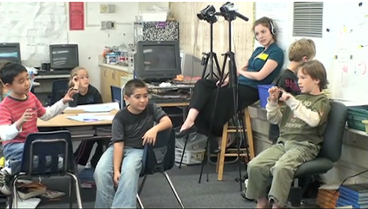

Much like the water cycle and toy cars, electric circuits is designed to engage students in substantive scientific inquiry. In electric circuits, students explore the properties of electric circuits and their individual components. Students are tasked with solving the following challenge:
How can you get a bulb to light, with battery and wire?
In the launching activity and follow-up activities, students focus not only on exploring ways to make a light bulb light, but also on explaining why it lights, how and why the individual components of the circuit work, and what passes between the circuit components (electricity, energy, etc.). Because electric circuits is a responsive curricula, what happens in the classroom depends on the ideas formulated by the students, and the instructor's "next move" decisions. In our responsive teaching in science project, electric circuits was implemented in fourth-grade classrooms.
In this section of the web site, we describe the first half of one teacher's (Kim's) implementation. Kim's enacted trajectory includes nodes (and links) for the launching activity and three subsequent activities.

Students in Kim's classroon engage in an energetic discussion about how batteries work.